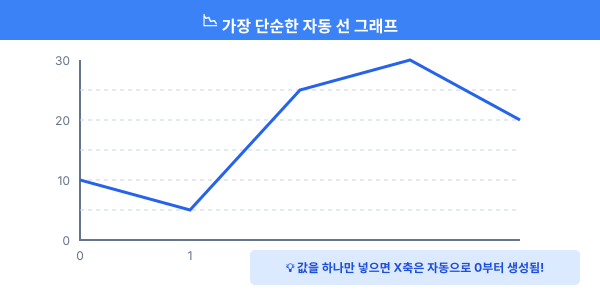
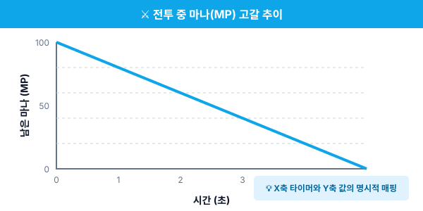
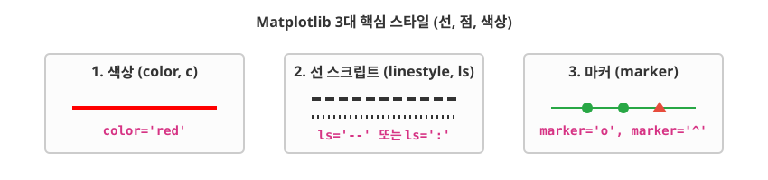
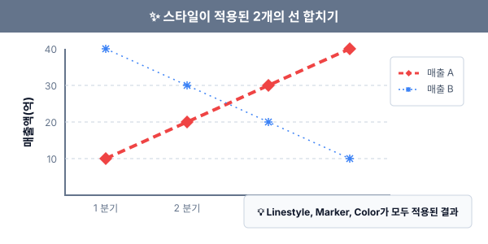

5.1.1 가장 단순한 선 그래프 (Line Plot)
데이터 시각화의 첫걸음은 가장 단순하고 직관적인 선 그래프(Line Plot)를 그려보는 것입니다.
💾 [실습 파일 다운로드] 본 강의의 전체 실습 코드를 직접 실행해 볼 수 있는 주피터 노트북 파일입니다. 아래 링크를 클릭하여 다운로드 후 VS Code에서 열어보세요.
- 📥 simple_line_plot_practice.ipynb 파일 다운로드 (클릭 또는 마우스 우클릭 후 ‘다른 이름으로 링크 저장’)
🚨 트러블슈팅:
ModuleNotFoundError에러가 발생할 때 실습 코드를 실행할 때No module named 'matplotlib'과 같은 에러가 뜬다면, 현재 사용 중인 파이썬 환경에 라이브러리가 없는 것입니다. 이럴 땐 코드 최상단 셀이나 터미널에서%pip install matplotlib명령을 한 번 실행하여 패키지를 설치해 주세요.
선 그래프의 특징
선 그래프는 데이터가 시간에 따라 어떻게 변하는지, 즉 추세(Trend)를 파악하는 데 가장 탁월한 차트입니다.
[실습 1] 선 그래프 그리는 원리 파악하기
[비유로 이해하기] 밤하늘의 별자리를 그리는 것과 같습니다. 데이터 좌표(x, y)에 점을 콕콕 찍고, 그 점들을 순서대로 하나의 실로 쭉 이어주는 과정이 바로 선 그래프입니다.
가장 단순한 코드로 직선을 한 번 그어보겠습니다.
import matplotlib.pyplot as plt
# X좌표를 따로 주지 않고 Y 좌표 리스트만 주면,
# X좌표는 자동으로 0, 1, 2... 순서대로 부여됩니다.
plt.plot([10, 5, 25, 30, 20])
# 지금까지 도화지에 그렸던 그림들을 모니터에 출력!
plt.show()
[단계별 코드 설명]
- 1단계:
import matplotlib.pyplot as plt구문을 통해 모니터에 그림을 그리는 시각화 도구를 불러옵니다. - 2단계:
plt.plot()에 Y축 데이터([10, 5, 25, 30, 20]) 리스트만 넣어주면 X축은 자동으로0, 1, 2, 3, 4순서로 생성됩니다. - 3단계:
plt.show()를 호출해야만 백그라운드 메모리에 그려진 그림이 최종적으로 모니터에 출력됩니다.

위 코드는 (0, 10), (1, 5), (2, 25), (3, 30), (4, 20) 지점에 보이지 않는 점을 찍고 파란색 실선으로 이어줍니다. 평수나 매출액의 증감을 보여줄 때 흔히 쓰입니다.
[실습 2] X축과 Y축 짝지어 그리기 (게임 캐릭터 마나 추이)
이번에는 X축에 명확한 시간(time)을, Y축에 변화하는 마나(mp)를 넣어보겠습니다. 그리고 그래프에 제목(title)과 축 이름(xlabel, ylabel)도 함께 달아줍니다.
import matplotlib.pyplot as plt
# 1단계: 한글 깨짐 방지 부적
plt.rcParams['font.family'] = 'Malgun Gothic' # 맥 사용자는 'AppleGothic'
plt.rcParams['axes.unicode_minus'] = False
# 2단계: 데이터 준비 (시간, 현재 MP)
time = [0, 1, 2, 3, 4, 5]
mp = [100, 80, 60, 40, 20, 0]
# 3단계: X축 시간과 Y축 마나 대응하여 선 그리기
plt.plot(time, mp)
# 4단계: 그래프 설명표 부착
plt.title("전투 중 마나(MP) 고갈 추이")
plt.xlabel("시간 (초)")
plt.ylabel("남은 마나 (MP)")
# 5단계: 그림 출력
plt.show()
[단계별 코드 설명]
- 1단계: 시각화 차트에 한글을 넣을 경우 글자가 깨지지 않도록
plt.rcParams를 사용하여 운영체제에 맞는 폰트로 셋팅합니다. - 2단계: X축에 들어갈 값(
time)과 Y축에 들어갈 값(mp)을 길이가 동일한 리스트로 각각 준비합니다. - 3단계:
plt.plot(X축, Y축)형태로 두 데이터를 전달하여 두 축을 1:1로 매핑합니다. - 4단계:
plt.title()로 전체 차트 제목을,plt.xlabel()과plt.ylabel()로 각각의 축 이름표를 지정합니다.

[출력 결과 해석] 우하향하는 직선이 그려지며, 가로축에는 “시간 (초)”, 세로축에는 “남은 마나 (MP)”라는 라벨이 예쁘게 달리게 됩니다.
[실습 3] 선 그래프 꾸미기 (스타일링의 3요소)
Matplotlib 장인은 붓의 크기, 물감의 색상, 붓의 터치 방식을 모든 것을 세밀하게 조정할 수 있습니다.

plt.plot() 함수에 다양한 인자를 넘겨주어 선의 모양을 바꿀 수 있습니다.
color또는c: 선의 색상 (예:r=빨강,b=파랑,g=초록)marker: 점의 모양 (예:o=동그라미,^=세모,s=네모,d=다이아몬드,*=별)linestyle또는ls: 선의 종류 (예:-=실선,--=파선,:=점선,-.=1점쇄선)linewidth또는lw: 선의 두께 (숫자)
두 개의 선을 각기 다른 스타일로 그리기:
import matplotlib.pyplot as plt
# 첫 번째 선: 빨간색(r), 굵게(lw=3), 점선(--), 다이아몬드 마커(d)
plt.plot([1, 2, 3, 4], [10, 20, 30, 40],
color='red', linestyle='--', marker='d', linewidth=3, label='매출 A')
# 두 번째 선: 파란색(b), 얇게(lw=0.5), 쩜쩜쩜(:), 별 모양 마커(*)
plt.plot([1, 2, 3, 4], [40, 30, 20, 10],
color='blue', linestyle=':', marker='*', linewidth=0.5, label='매출 B')
plt.title('스타일이 적용된 2개의 선 합치기')
plt.xlabel('분기')
plt.ylabel('매출액(억)')
# 어떤 선이 수입 A/B인지 구별해주는 '범례'를 구석에 표시합니다.
plt.legend()
plt.show()
[단계별 코드 설명]
- 여러 선 중첩하기: 하나의 도화지 안에서
plt.plot()을 연달아 여러 번 호출하면, 지워지지 않고 누적해서 겹쳐 그려집니다. - 스타일 지정:
color,linestyle,marker,linewidth파라미터를 활용해 차트 선의 시각적 형태를 차별화합니다. - 범례 표시: 각 선이 무엇을 의미하는지 이름을 달기 위해
label을 지정하고, 마지막에plt.legend()를 호출하면 차트 한 켠에 안내판(범례)이 뜹니다.

🔥 코딩 고수의 꿀팁: 포맷 문자열 축약 색상, 마커, 선종류 세 가지는 너무 자주 쓰여서 하나로 축약할 수 있습니다.
plt.plot(x, y, 'ro--')라고만 적으면 파이썬이 알아서 r(빨간색) + o(동그라미 마커) + –(파선) 으로 해석해서 그려줍니다!
선 그래프 외에 점만 흩뿌리는 산점도, 기둥을 세우는 막대그래프 등은 Round 2에서 Seaborn과 함께 다루겠습니다. 다음 장에서는 이런 수많은 그래프들을 한 화면에 바둑판처럼 예쁘게 배치하는 Figure와 Subplot(서브플롯) 분할 기법을 배웁니다.